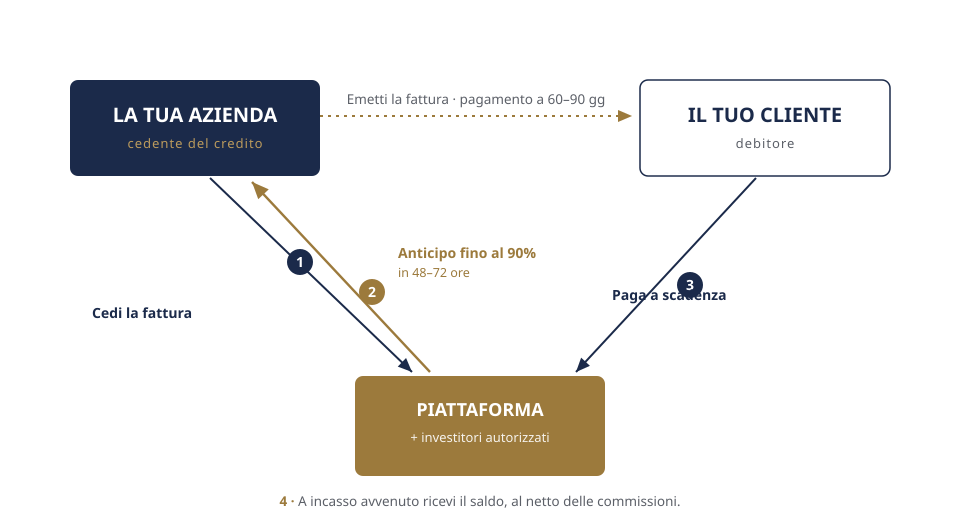
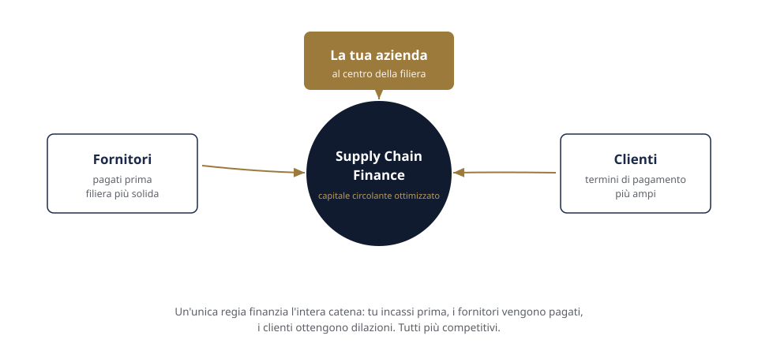

Crowdfunding & Capitale
Dal lending crowdfunding al private equity e venture capital: una panoramica delle forme di raccolta presenti sul mercato.
Con l'invoice trading il titolare di un credito commerciale può cederlo prima della scadenza: l'acquirente ne diventa titolare corrispondendo un prezzo, determinato in base al valore del credito alla data di cessione.
È una compravendita di credito: il titolare cede un credito commerciale e l'acquirente ne diventa titolare pagando un prezzo. Il prezzo è commisurato al valore del credito alla data di cessione, non al valore nominale a scadenza. Non è un finanziamento né un prestito. La piattaforma tecnologica consente a cedenti e acquirenti che vi aderiscono di incontrarsi.

Cedente e acquirente aderiscono alla piattaforma e definiscono la cessione. Trasferito il credito, l'acquirente corrisponde il prezzo. Il debitore pagherà a scadenza al nuovo titolare del credito.

Quattro passaggi: la tecnologia gestisce l'incontro tra le parti, le decisioni restano del titolare del credito.
Il titolare propone i crediti che intende cedere. Senza obblighi.
Gli acquirenti aderenti analizzano i crediti e la solidità del debitore ceduto e formulano una proposta.
Il titolare valuta le condizioni e sceglie se accettare. La cessione si perfeziona tra le parti.
Perfezionata la cessione, l'acquirente corrisponde il prezzo concordato. A scadenza il debitore paga il nuovo titolare del credito.
Descrizione degli elementi che caratterizzano la cessione del credito commerciale.
| Elemento | Descrizione |
|---|---|
| Natura giuridica | Cessione del credito (artt. 1260 e segg. c.c.) |
| Oggetto | Credito commerciale |
| Corrispettivo | Prezzo commisurato al valore del credito alla data di cessione |
| Effetti contabili | Cessione di un attivo; non genera debito |
| Soggetti | Cedente, cessionario (acquirente), debitore ceduto |
| Scelta dei crediti | Rimessa al titolare del credito |
| Ruolo della piattaforma | Servizio tecnologico di matching tra le parti aderenti |
Insieme di soluzioni tecniche per la gestione del capitale circolante lungo la filiera, basate sulla cessione di crediti e sulla gestione dei termini di pagamento tra i soggetti coinvolti.

Strumenti e informazioni per orientarsi tra le soluzioni disponibili sul mercato.
Dal lending crowdfunding al private equity e venture capital: una panoramica delle forme di raccolta presenti sul mercato.
Soluzioni tecniche per la gestione del flusso di cassa lungo la filiera, tra fornitori e clienti.
Strumenti e informazioni per orientarsi tra gli strumenti di mercato, in base agli obiettivi dell'impresa.
Aziende che vantano crediti commerciali verso clienti con termini di pagamento dilazionati.
Imprese con clienti esteri e termini di pagamento lunghi.
Fornitori di GDO o grandi gruppi con dilazioni di 90–120 giorni.
Imprese con cicli di produzione e di incasso non allineati.
No. È una compravendita: il titolare cede un credito commerciale e l'acquirente ne diventa titolare pagando un prezzo, commisurato al valore del credito alla data di cessione e non al valore nominale a scadenza. Non è un prestito e, trattandosi di una cessione, non costituisce debito.
No. È il titolare a scegliere quali crediti proporre in cessione e quali proposte accettare.
Il corrispettivo può essere riconosciuto in un'unica soluzione e arrivare fino al 100% del valore del credito. Il prezzo è determinato in base al valore del credito alla data di cessione.
Dipende dalla forma di cessione (notificata o meno al debitore ceduto). Le modalità sono definite tra le parti.
Soggetti e investitori che aderiscono alla piattaforma e valutano i crediti proposti. La cessione si perfeziona direttamente tra cedente e acquirente.
Brand Up Consulting fornisce esclusivamente un servizio tecnologico: una piattaforma di matching alla quale le parti aderiscono e si incontrano, esattamente come potrebbero fare in autonomia in rete. Non svolge intermediazione e non interviene nelle decisioni delle parti.
Contattaci per ricevere informazioni sull'operatività della piattaforma tecnologica.